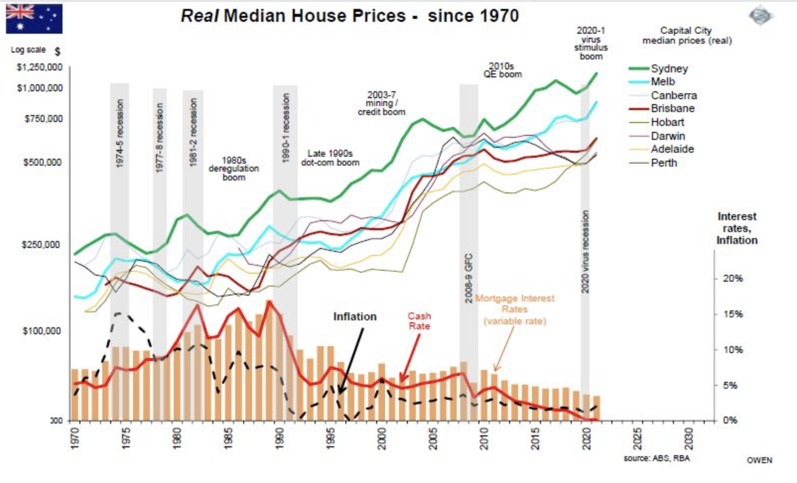

How Current Affairs Affect Market Rates


This graph details the growing median house prices in capital cities across Australia. This shows how unaffordable Australia is as it is placed ahead of all other states by a far margin.
+7% houses
+6% units
FY2025–26 forecast
$1,621,930
Sydney median by June 2026
+23.4% units
Through June 2026
Sydney will gain 650,000 more people by 2034 — part of 1 million additional Australians nationally. Yet the city is building only ~30,000 homes per year against a demand of 60,000+, meaning the supply gap will keep driving prices upward through the decade.
Sydney’s median house price is forecast to continue its rise, and could potentially reach $2million by late 2026 and 2027. The median house price is expected to rise by $102,200 across all the combined Australian Capital cities whilst the unit prices have been forecasted to increase from $52,200 (as of September 2025) to $759,112 by the end of 2026. Most property experts are expecting a “grind higher” rather than a rapid boom, with annual growth rates settling between 5% and 7%. By 2030 the average house price is forecasted to reach $2.4m - which is nearly $1m more than today - if the recent five year pattern repeats.